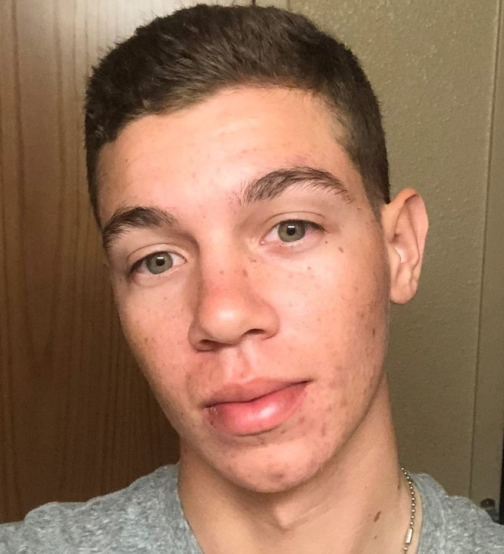

About Me

My name is Aaron Williams, I am 20 years old and I live in Davis, CA.
I am a Computer Science major at Sacramento City College and I am working towards my Associates in Computer Science. I am also the Vice President of the Computer Science club at Sacramento City College.
I've been an Intelligence Analyst for the California Army National Guard for over 3 years, and I've helped in many of California's recent major wildfires!
I've been an Intelligence Analyst for the California Army National Guard for over 3 years, and I've helped in many of California's recent major wildfires!
My Hobbies include; programming custom projects, playing video games, watching horror movies, working out, and traveling! Also I'm terrified of heights!